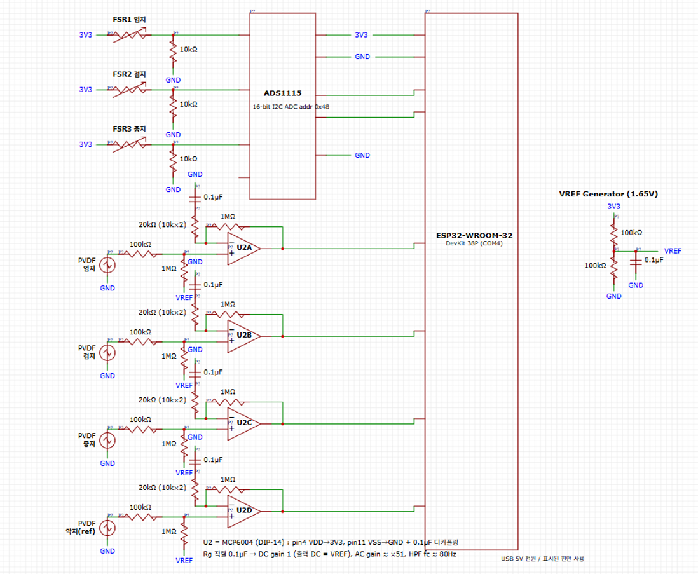

문제: 파지창은 생각보다 좁다
모든 물체에는 [F_slip, F_damage] 라는 힘의 창이 있습니다. 이보다 약하면 미끄러지고, 세면 부서집니다. 사람 손은 이걸 무의식적으로 하지만, 로봇에게는 접촉 힘을 실시간으로 알려주는 센서와 그걸 되먹이는 제어기가 필요합니다.
미션은 작은 종이컵을 손끝 세 점(엄지·검지·중지)으로 정밀 파지하는 것입니다. 파워 파지를 일부러 배제했는데, 손으로 물체를 가둬버리면(form closure) 애초에 슬립이 나지 않아 센서 루프가 하는 일이 없기 때문입니다. 순수 마찰만으로 버티는 조건이어야 폐루프가 실제로 하중을 짊어집니다. 빈 종이컵은 좌굴로 망가지기 때문에 창이 특히 좁고, 그래서 골랐습니다.
신호 체인
두 센서는 역할이 다릅니다. FSR은 얼마나 세게 누르는지를, PVDF는 언제 미끄러지는지를 봅니다. 대역폭 요구가 다르기 때문에 경로도 분리했습니다. FSR은 저대역이라 16-bit ADS1115로 정밀하게 읽고, 슬립 진동은 그보다 훨씬 빠르기 때문에 ESP32 내부 ADC로 직접 받습니다. 약지 채널은 물체에 닿지 않게 두고 구조 진동·서보 반력을 빼내는 노이즈 레퍼런스로 씁니다.

실측 기록
8축 서보 버스 구동
손가락당 서보 2개, 총 8축을 시리얼 버스 하나로 제어합니다. 개별 캘리브레이션 후 스크립트로 개폐 시퀀스를 재현합니다.
아직 아닌 것 — 힘 되먹임 없음. 위치 지령만.
손 추적에서 실기까지
웹캠 손 추적 결과를 dora-rs로 흘려보내고, QP 기반 IK로 로봇 손 관절각으로 리타게팅한 뒤 실기에 보냅니다. MuJoCo는 렌더러 겸 기구학 모델로 씁니다.
성격 — 학습 모델이 아닌 고전 기하 파이프라인.
FSR 3채널 실시간 응답
손끝을 하나씩 누를 때 해당 채널만 피크가 뜹니다. 기준선은 0V에 안착하고, 가벼운 누름에서 0.4~0.9V 범위로 반응합니다.
아직 아닌 것 — 뉴턴 단위 환산 전. 로드셀 캘리 곡선 작업 중.
PVDF 슬립 트랜지언트 관측
증폭단을 거친 PVDF 출력에서, 종이컵이 미끄러지는 순간 노이즈 플로어 위로 뚜렷한 버스트가 나옵니다.
아직 아닌 것 — 임계값 정량화, 오검출률 측정 미실시.
구성
기구 · 액추에이터
- 플랫폼
- AmazingHand (오픈소스, 오른손)
- 자유도
- 8 DOF (손가락당 2)
- 서보
- Feetech SCS0009 ×8
- 버스
- half-duplex TTL, 1 Mbaud
센싱
- 힘
- FSR 400 Short ×3
- 슬립
- TE LDT0-028K PVDF ×4
- ADC
- ADS1115 16-bit / ESP32 ADC1
- 아날로그 프론트엔드
- MCP6004, 단전원 3.3V
- 캘리 기준
- HX711 + 바형 로드셀
소프트웨어
- 제어
- Python (rustypot, pyserial, numpy)
- 펌웨어
- Arduino / ESP32-WROOM-32
- 기구학
- MuJoCo + Mink IK (QP)
- 데이터플로
- dora-rs, MediaPipe
- CAD
- build123d (코드 CAD)